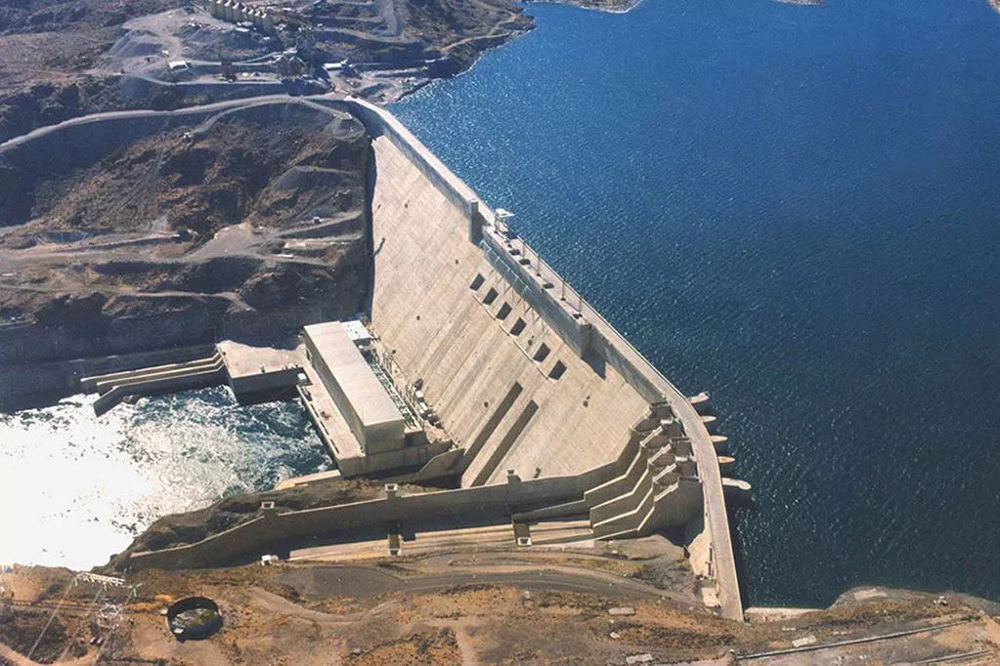
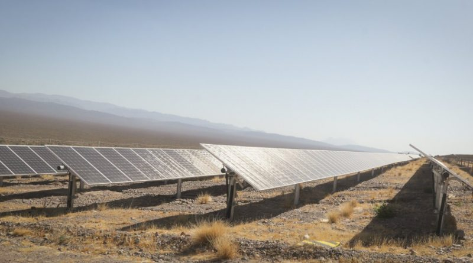
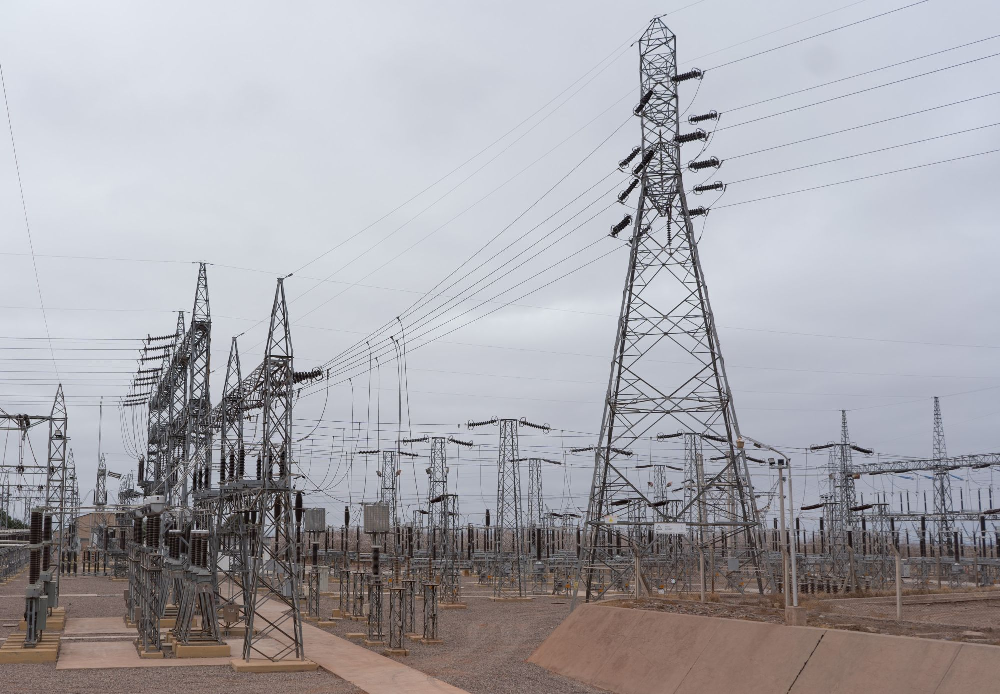
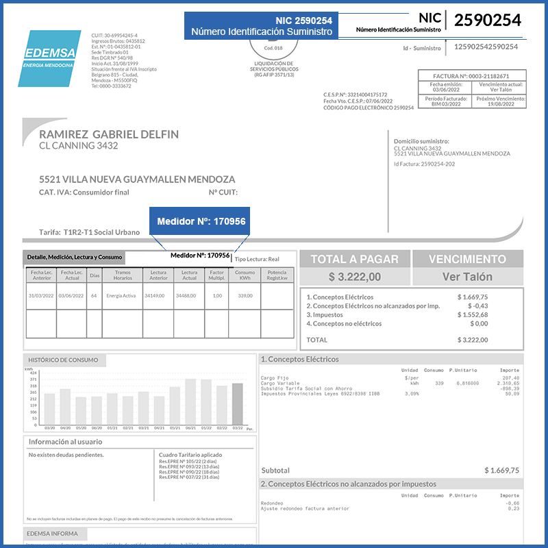

Mercado Eléctrico Mayorista. Espacio donde los generadores cuyanos —hidroeléctricos, térmicos y solares— vuelcan su producción para ser adquirida por grandes usuarios e industrias, o por las distribuidoras locales para el consumo residencial.
Compañía encargada del despacho técnico y económico en tiempo real. Determina qué plantas de la región operan en cada momento para cubrir la demanda de la forma más eficiente y económica.
Sistema Argentino de Interconexión. Red mallada nacional que unifica la oferta y la demanda. Permite que la energía generada en Cuyo abastezca a otras regiones o, a la inversa, que la zona reciba energía del resto del país cuando el recurso local es insuficiente.
Concesionaria del transporte de energía eléctrica en Alta Tensión a nivel nacional. Su rol clave en Cuyo es operar y mantener la red troncal de Extra Alta Tensión (500 kV), que actúa como la gran autopista eléctrica que conecta físicamente el nodo cuyano con el SADI. Delimita su operación directamente con Distrocuyo S.A., que se encarga del transporte regional secundario en 132 kV.
Ente Nacional Regulador de la Electricidad. Organismo autárquico federal que fiscaliza los contratos de concesión, dicta reglamentos de seguridad pública y supervisa la calidad del servicio de las transportistas mayoristas que operan en la región: Transener y Distrocuyo.
| Parámetro Técnico | Central Hidroeléctrica Potrerillos (Mendoza) | Parque Solar Ullum (San Juan) |
|---|---|---|
| Recurso Utilizado | Hídrico (Río Mendoza) | Radiación Solar Fotovoltaica |
| Configuración | Sistema en cascada: Central Cacheuta y Central Álvarez Condarco. | Nodo fotovoltaico dividido en etapas (Ullum I, II, III y IV). |
| Potencia Instalada | 181 MW en total (Cacheuta: 120 MW / Á. Condarco: 61 MW). | 82 MW en el bloque principal de Genneia (el complejo total supera los 300 MW). |
| Equipamiento Clave | Turbinas hidráulicas tipo Francis (caudales y saltos medianos) y túneles de conducción. | Más de 283.000 paneles monocristalinos (300 ha) e inversores electrónicos de corriente (CC → CA). |
| Inyección al SADI | Eleva su tensión en Estación Transformadora propia a 132 kV hacia la red de Distrocuyo. | Los inversores entregan en 33 kV; la ET Solar San Juan eleva a 132 kV hacia la línea Punta Negra. |


| Hidroeléctrica | Solar | Térmica (Fósil) | |
|---|---|---|---|
| Recurso | Ríos de deshielo de los Andes renovable convencional | Radiación > 8,22 kWh/m² diarios renovable no convencional | Gas / gasoil de la Cuenca Cuyana no renovable |
| Rol en la red | Fuente principal por relieve montañoso | Mayor potencial de crecimiento regional | Estabilidad y respaldo ante picos de demanda |
| Ventajas | Aprovecha el flujo natural sin consumir el agua (solo energía cinética). | La fuente más limpia en operación: sin emisión de gases de efecto invernadero. | Alta disponibilidad y estabilidad para el despacho regional. |
| Desventajas | Los embalses alteran ecosistemas fluviales, sedimentación e impacto visual. | Ocupa grandes superficies de suelo árido e intermitencia día/noche y clima. | Emite y contaminantes; agota recursos no renovables. |
Potrerillos y Ullum producen energía en media tensión. Para viajar cientos de kilómetros sin perderse en forma de calor, las estaciones transformadoras de cada planta elevan el voltaje a alta tensión.
La Estación Transformadora de cada central eleva la energía al nivel de transporte regional, habitual en las redes de Cuyo, para minimizar las pérdidas en la línea.
La energía elevada viaja por las torres y líneas aéreas que cruzan los paisajes cuyanos. Distrocuyo opera y mantiene esta red, conectando las centrales con los nodos de consumo.

Al acercarse al Gran Mendoza o Gran San Juan, la energía ingresa a subestaciones (ej. ET Cruz de Piedra o ET Nueva San Juan), donde el voltaje se rebaja a media tensión. A partir de aquí, el control pasa a las distribuidoras locales.
La energía circula por el cableado público hasta los transformadores de las esquinas, que reducen el voltaje al estándar de seguridad domiciliario argentino: 220 V (monofásica) y 380 V (trifásica).
El cable de baja tensión ingresa a la propiedad por la acometida, pasa por el medidor de la distribuidora (EDEMSA en Mendoza o Energía San Juan) y llega al tablero interno: llaves térmicas, disyuntor y tomacorrientes.
Aunque CAMMESA despacha la energía a nivel nacional, los entes provinciales EPRE Mendoza y EPRE San Juan controlan que EDEMSA y Energía San Juan mantengan la red domiciliaria estable, segura y con los voltajes correctos.

Titular: Ramírez Gabriel Delfín · Dirección: Villa Nueva, Guaymallén, Mendoza
NIC: 2590254 · Medidor N.º: 170956
Emisión: 03/06/2022 · Período: Bimestre 03/2022 · Días facturados: 64
T1: pequeño consumidor residencial. R2: rango de consumo intermedio. Social Urbano: usuario alcanzado por el beneficio de tarifa social o subsidio estatal, definido por el EPRE Mendoza.
Lectura anterior 34.149 kWh → Lectura actual 34.488 kWh
Consumo registrado: 339 kWh — diferencia entre ambas lecturas físicas del medidor en el domicilio.
Cargo Fijo: costo básico por disponibilidad del servicio y mantenimiento de redes, independiente del consumo.
Cargo Variable: proporcional a los 339 kWh consumidos (mayor porcentaje del costo neto).
Subsidio Tarifa Social: descuento y bonificación estatal aplicado directamente sobre los cargos netos.
Tributos provinciales de Mendoza para el fondo de infraestructura eléctrica. Total impuestos nacionales y provinciales: $1.552,68 (IVA + tasas provinciales). Conceptos no eléctricos: $0,00. Ajustes técnicos por redondeo de centavos.
(Cargo Fijo + Cargo Variable con subsidio) + Impuestos + Redondeo = $3.222,00
La factura incorpora un gráfico de barras con la evolución del consumo en bimestres anteriores, permitiendo comparar el uso de energía en el tiempo y detectar variaciones estacionales o anomalías.
Una de las principales problemáticas es la necesidad de un Sistema Automático de Desconexión (DAG) regional. Su sola existencia evidencia que la infraestructura de transporte en Cuyo es vulnerable a desequilibrios entre generación y demanda.
Ante fallas en el Sistema Argentino de Interconexión (SADI), el DAG desconecta cargas automáticamente para evitar un colapso total de la red local.
Transener opera las líneas de 500 kV mientras Distrocuyo gestiona los 132 kV. Esta división exige una coordinación perfecta de CAMMESA: una falla en los nodos de interconexión puede aislar a la región del resto del país.
En zonas de montaña, conductores y aisladores deben soportar la tracción adicional del peso de la nieve y el hielo, lo que aumenta el riesgo de fallas estructurales en las líneas.
El clima árido favorece la acumulación de suciedad en los aisladores de porcelana o vidrio, capaz de provocar descargas disruptivas (flashover) que interrumpen el servicio.
Obliga al uso de aisladores compuestos o sintéticos, más costosos pero necesarios en zonas sucias o de difícil acceso, elevando el costo de operación de la red regional.
El ENRE debe equilibrar las inversiones necesarias para expandir el transporte con tarifas que sean pagables por los usuarios residenciales y grandes usuarios de Mendoza y San Juan.
Pese al enorme potencial solar (con máximos de ), la matriz nacional sigue siendo predominantemente no renovable. Aprovechar plenamente el recurso regional sigue siendo el gran desafío frente a la infraestructura térmica instalada.